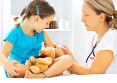

Календарь детских прививок.
Польза вакцинации ребенка.

В современном российском обществе в последнее десятилетие между родителями развернулись прения в отношении прививок для детей, разделившие их на три больших группировки. Назовем их сторонниками вакцинации, антивакцинаторами и сомневающимися, за которых и идет борьба между первыми двумя «группировками».
Между тем, вся эта околомедицинская смута значительно усложнила работу санитарных врачей по предотвращению заболеваний эпидемического характера. Каждая группа родителей приводит свои, порой невероятные доводы, но попробуем объективно разобраться: какие пользу и вред несет за собой вакцинация?
Вакцинация (vaccination), она же – прививка (inoculation) – это искусственная иммунизация, производимая посредством введения в организм человека антигенов микроорганизмов в виде специально приготовленного материала с целью повышения его резистентности (устойчивости) к инфекционным заболеваниям. После введения антигенного материала происходит стимуляция выработки собственных антител к определенным возбудителям болезней.
Вакцинация может проводиться как с профилактической (вакцинопрофилактика), так и с лечебной (вакцинотерапия) целями. Вакцины, изготовленные из живых ослабленных патогенных микроорганизмов более эффективны (примерно на 10–15%), чем произведенные на основе инактивированных (убитых) бактерий и вирусов – они вызывают значительно более длительный и напряженный иммунитет, при этом у современных вакцин обеих типов реактогенность (переносимость) почти одинаковая, но все же с небольшим перевесом в сторону «убитых» вакцин, почему их и применяют у детей дошкольного возраста.
Следует добавить, что вакцины также делятся на моновалентные, или рассчитанные на какой-то один конкретный возбудитель заболевания, и поливалентные, так называемые ассоциированные вакцины, совмещающие антигены нескольких возбудителей, например АКДС (адсорбированная коклюшно-дифтерийно-столбнячная вакцина).
Что такое ревакцинация?
Ревакцинация, как следует из самого названия (приставка re в любом латинском слове означает «повтор»), – это очередное прививание для повышения устойчивости организма к тому же самому заболеванию (заболеваниям), повторной выработки полного системного иммунитета к возбудителям инфекции и повышения его интенсивности.
Количество рекомендованных ревакцинаций на протяжении жизни, в зависимости от типа вакцины, может быть от одной до семи, или же ревакцинация в некоторых случаях не требуется вовсе. Против дифтерии и столбняка первые три ревакцинации проводятся до 16 лет, последующие – через каждые 10 лет вплоть до 56-летнего возраста. Прививание против полиомиелита предусматривает 3 ревакцинации до 16-ти лет. А вот прививка против паротита требует однократной инъекции в возрасте до 7-ми лет без необходимости ревакцинаций, поскольку обеспечивает пожизненный иммунитет.
Прививки от основных инфекций
В России выделяют две категории прививок – обязательные и дополнительные:
- первые входят в национальные и региональные календари профилактических прививок и призваны защитить от самых тяжелых и смертельных инфекций;
- вторые являются желательными, но делаются исходя из жизненных ситуаций (например, перед путешествием или при устройстве на опасное производство), по эпидемическим показаниям или по желанию.
Последние календари прививок были утверждены:
- Национальный календарь – Приказом Министерства здравоохранения и социального развития РФ от 31 января 2011 г. № 51н «Об утверждении национального календаря профилактических прививок и календаря профилактических прививок по эпидемическим показаниям»;
- Московский региональный календарь – Приказом Департамента здравоохранения города Москвы от 31 марта 2011 г. № 271 «Об утверждении регионального календаря профилактических прививок и календаря профилактических прививок по эпидемическим показаниям».
Таблица. Календарь обязательных прививок Российской Федерации
Календарь профилактических прививок по эпидемическим показаниям включает достаточно большое количество вакцин, среди которых хочется отметить и рекомендовать для вакцинации:
- Против Гепатита А – им заражаются преимущественно дети (в основном через воду и пищу), в особенности, пребывающие в детсадах, лагерях отдыха, школах, отъезжающие на экскурсии или на отдых в другие города. Более того, наибольший эффект приносит вакцинация в раннем детском возрасте. Для прививания используются препараты: Аваксим 80 (Франция), Хаврикс 720 (Англия), Вакта 25 (США).
- Против пневмококковых инфекций – заболеваний, вызываемых бактерией Streptococcus pneumoniae, насчитывающей порядка 85 штаммов (серотипов), не все из которых особо опасны или распространены, поэтому лаборатория «Санофи Пастер» (Франция) разработала вакцину, объединяющую в себе 23 самых распространенных серотипов пневмококков, поэтому она и называется ПНЕВМО-23. Собственно говоря, это единственная сертифицированная в России вакцина против пневмококковых инфекций (с 1999 года).
- Против менингококковой инфекции – ее особенность состоит в том, что из-за наличия у менингококка защитной капсулы (такой же, как и у гемофильной палочки или пневмококков) маленькие дети – от 1 года до 5 лет – неспособны результативно формировать иммунитет против природной инфекции, поэтому на эту возрастную группу приходится до 50% всех случаев заболевания. В России используются две вакцины против менингококков: отечественная «Вакцина против менингококковой инфекции серогруппы А, А и С» (ГУП им. Габричевского, Москва) и французская 2-х валентная полисахаридная вакцина Менинго А+С.
- Против клещевого энцефалита – вирусного природно-очагового заболевания, преимущественно поражающего центральную нервную систему, передающегося посредством укусов зараженными иксодовыми клещами. В теплые сезоны родители часто берут с собой детей на прогулки в обширные парки, на дачу, в поход на природу, где особенно высок риск «соприкоснуться» с нежелательными соседями по природе. Для предотвращения возможного заражения клещевым энцефалитом в ряде стран были разработаны эффективные вакцины против этого заболевания: «ФСМЕ-ИММУН Джуниор» (Австрия), «Энцепур» (Германия), российские вакцины против клещевого энцефалита – концентрированная (Институт полиомиелита и вирусных энцефалитов, Москва) и сорбированная (МПО Вирион), а также иммуноглобулины «ФСМЕ-Булин» и «Иммуноглобулин против клещевого энцефалита» (10 производителей в России).
Конечно, для заядлых путешественников может понадобиться более внушительный арсенал вакцин, которые потенциально спасут жизни членов семей, но рассмотреть здесь, в этой статье, все прививки невозможно, поэтому при покупке туристической путевки за рубеж обязательно поинтересуйтесь у туристического провайдера, какие заболевания могут поджидать на неизведанной территории. Всегда читайте страницу сайта ВОЗ «Вопросы здравоохранения. Путешествия» на русском языке – возможно именно это спасет вашу жизнь или здоровье вашей семьи.
Прививки перед поступлением в детсад
Перед поступлением в детский сад имеет смысл сделать ряд дополнительных прививок, каких именно?
Таблица. Прививки перед детским садом, если остальные вакцины были проведены вовремя
Все это убережет ваших детей от тяжелых, а порой смертельно опасных инфекций. Лучшего способа профилактики заболеваний медицина пока не придумала. Это, по мнению ВОЗ (Всемирной организации здравоохранения) – идеальный способ предотвращения заболеваний – чтобы об этом не говорили. Поскольку эффективность антибиотиков с каждым годом становится все ниже, другого способа уберечься от инфекций просто не остается.
ПОДГОТОВКА ДЕТЕЙ К ПРИВИВКАМ
Следует помнить о соблюдении нескольких элементарных правил подготовки и назначения прививок, среди них:
- Свежие анализы крови и мочи, без изучения которых ни один профессиональный врач не назначит проведение вакцинации;
- Заключение детского невропатолога о возможности прививания ребенка;
- Заключение аллерголога о возможности проведения вакцинации, профилактика аллергических реакций;
- Наличие жаропонижающих свечей с наличием парацетамола (так как сиропы способны усиливать аллергическую реакцию из-за дополнительных ингредиентов);
- Воздержание перед прививкой от новых видов пищи;
- Прием антигистаминных (противоаллергенных) препаратов за пару дней до прививки;
- Гомеопатические препараты никогда не помогают – они могут являться только вспомогательным средством;
- Не вздумайте испугать ребенка прививкой (даже шутя), при вопросе про укол отвечайте честно – «это может быть немного больно, но терпимо и очень быстро»;
- Не забудьте про прививочный сертификат (если он у вас есть);
- Возьмите с собой самую интересную для ребенка игрушку и чистую пеленку.
В ПРОЦЕССЕ ПРИВИВАНИЯ
После предварительной подготовки к прививкам запомните еще несколько полезных советов:
- Перед выходом из дома проверьте наличие температуры у ребенка – она должна быть ниже 37 o С, затем, непосредственно перед уколом, попросите медицинский персонал повторить измерение температуры (это иногда может вызвать раздражение, но вы должны настоять);
- Удостоверьтесь в том, что температура на улице не выше или не ниже климатической нормы;
- Удостоверьтесь в том, какая вакцина, какого производства и года выпуска, от каких инфекций будет введена вашему ребенку, попросите показать ее в нераспечатанном виде;
- Если у вас возникли хотя бы малейшие сомнения, вы должны без стеснения разрешить их с врачом;
- Если у вас вызвал сомнения медицинский персонал (пусть и не обоснованный) – откажитесь от прививания, перенесите его на другую дату или попросите врача заменить медицинских сестер;
- Сдержите свое волнение, переключитесь на лучшие моменты в вашей жизни – тревога очень быстро передается ребенку;
- При волнении ребенка постарайтесь отвлечь его разговорами на интересные ему темы;
- После инъекции ребенок должен выплакаться – это нормально и естественно, можно облегчить его «страдания», сказав, что боль можно «выдохнуть», сделав глубокий вдох и медленный выдох.
ПОСЛЕ ПРИВИВАНИЯ
Если вы что-то не успели предпринять до вакцинации, это следует сделать непосредственно после нее – вот некоторые советы:
- Задайте оставшиеся вопросы врачу, спросите о возможных последствиях прививания: какие реакции могут возникнуть и как в этом случае действовать;
- Даже если вас не оставили на полчаса после вакцинации в поликлинике принудительно, то останьтесь в ней на 30 минут после инъекции самостоятельно;
- Прививку АКДС нельзя делать в жаркое время года, но если она уже была сделана, то следует по возвращению домой ребенку дать парацетамол, и повторить прием жаропонижающего на ночь;
- При возникновении повышенной температуры – это нормально, например, после прививок АКДС – можно воспользоваться обмыванием тела водой комнатной температуры (не водкой (!), которая раздражает нежную кожу);
- Помните, что любые жаропонижающие средства имеют свой лимит потребления, за пределы которого нельзя выходить, особенно, в случае с детьми;
- В качестве жаропонижающего и противовоспалительного средства НИ В КОЕМ СЛУЧАЕ нельзя пользоваться аспирином у детей до 5 лет;
- Вакцина АКДС может вызывать не только повышение температуры и общее недомогание, но и проявление фебрильных судорог, что является крайне редким явлением, считается условной нормой. Эти судороги не следует путать с эпилептическими, поскольку они носят временный характер и длятся не более двух недель, пока ребенок не переболеет болезнью в малой форме;
- За исключением реакции манту после прививок ребенка не только можно, но и нужно купать в воде комнатной температуры, но в день прививки не купать и не гулять;
- Не ранее чем через трое суток после прививки можно менять привычный рацион питания ребенка;
- При проявлении выраженных реакций в месте инъекций следует сделать мягкий согревающий компресс, например, водный, который необходимо менять по мере необходимости;
- Помните, что привитие живыми вакцинами может вызвать недомогание и побочные реакции, начиная с пятых суток после вакцинации вплоть до двенадцатых;
- Если ребенок был привит неживой (убитой, инактивированной) вакциной, то любые побочные эффекты следует относить к совпадениям – скорее всего, это могут быть прорезающиеся зубы либо простудные инфекции.